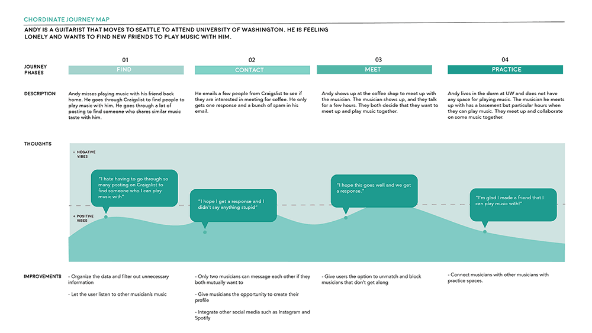

Analysis of Current Experience
To understand how musicians connected with others for jam sessions, we conducted informal interviews. We discovered that many musicians find other people to communicate through social media sites such as Craigslist, Facebook, and Reddit. That method of communication are full of spam and flakey people. We created a journey map based on our findings of how musicians connected with each other.

Click Here to view a larger version of the journey map.
Discovery
After learning how musicians connect with each other, we wanted to find ways to enable them to meet. We created a questionnaire to learn more about practice space's in the Seattle area and understand what areas we can explore with our app. We discovered that there is a significant problem in finding a viable practice space locally due to the rising cost of living.